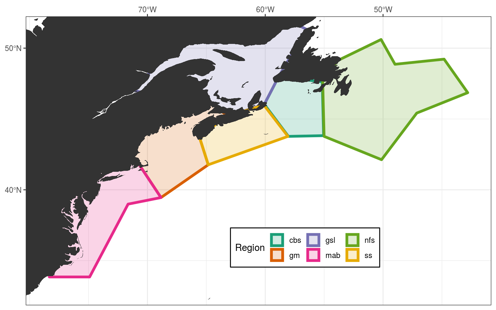

Study area and regions
Robert Schlegel
2019-08-22
Last updated: 2020-02-20
Checks: 7 0
Knit directory: MHWNWA/
This reproducible R Markdown analysis was created with workflowr (version 1.6.0). The Checks tab describes the reproducibility checks that were applied when the results were created. The Past versions tab lists the development history.
Great! Since the R Markdown file has been committed to the Git repository, you know the exact version of the code that produced these results.
Great job! The global environment was empty. Objects defined in the global environment can affect the analysis in your R Markdown file in unknown ways. For reproduciblity it’s best to always run the code in an empty environment.
The command set.seed(20190513) was run prior to running the code in the R Markdown file. Setting a seed ensures that any results that rely on randomness, e.g. subsampling or permutations, are reproducible.
Great job! Recording the operating system, R version, and package versions is critical for reproducibility.
Nice! There were no cached chunks for this analysis, so you can be confident that you successfully produced the results during this run.
Great job! Using relative paths to the files within your workflowr project makes it easier to run your code on other machines.
Great! You are using Git for version control. Tracking code development and connecting the code version to the results is critical for reproducibility. The version displayed above was the version of the Git repository at the time these results were generated.
Note that you need to be careful to ensure that all relevant files for the analysis have been committed to Git prior to generating the results (you can use wflow_publish or wflow_git_commit). workflowr only checks the R Markdown file, but you know if there are other scripts or data files that it depends on. Below is the status of the Git repository when the results were generated:
Ignored files:
Ignored: .Rhistory
Ignored: .Rproj.user/
Ignored: LaTeX/SOM_node_summary.docx
Ignored: LaTeX/SOM_node_summary.pdf
Ignored: data/NAPA/NAPA_clim_U.Rda
Ignored: data/NAPA/NAPA_clim_V.Rda
Ignored: data/NAPA/NAPA_clim_W.Rda
Ignored: data/NAPA/NAPA_clim_emp_ice.Rda
Ignored: data/NAPA/NAPA_clim_emp_oce.Rda
Ignored: data/NAPA/NAPA_clim_fmmflx.Rda
Ignored: data/NAPA/NAPA_clim_mldkz5.Rda
Ignored: data/NAPA/NAPA_clim_mldr10_1.Rda
Ignored: data/NAPA/NAPA_clim_qemp_oce.Rda
Ignored: data/NAPA/NAPA_clim_qla_oce.Rda
Ignored: data/NAPA/NAPA_clim_qns.Rda
Ignored: data/NAPA/NAPA_clim_qsb_oce.Rda
Ignored: data/NAPA/NAPA_clim_qt.Rda
Ignored: data/NAPA/NAPA_clim_runoffs.Rda
Ignored: data/NAPA/NAPA_clim_ssh.Rda
Ignored: data/NAPA/NAPA_clim_sss.Rda
Ignored: data/NAPA/NAPA_clim_sst.Rda
Ignored: data/NAPA/NAPA_clim_taum.Rda
Ignored: data/NAPA/NAPA_clim_vars.Rda
Ignored: data/NAPA/NAPA_clim_vecs.Rda
Ignored: data/NAPA/synoptic_vec_states.Rda
Ignored: data/SOM/packet.Rda
Ignored: data/SOM/synoptic_states.Rda
Ignored: data/SOM/synoptic_states_other.Rda
Ignored: data/anom/ALL_anom.Rda
Ignored: data/anom/ALL_other.Rda
Ignored: data/anom/ERA5_mslp_anom.Rda
Ignored: data/anom/ERA5_qnet_anom.Rda
Ignored: data/anom/ERA5_t2m_anom.Rda
Ignored: data/anom/ERA5_u_anom.Rda
Ignored: data/anom/ERA5_v_anom.Rda
Ignored: data/anom/GLORYS_mld_anom.Rda
Ignored: data/anom/GLORYS_u_anom.Rda
Ignored: data/anom/GLORYS_v_anom.Rda
Ignored: data/anom/OISST_sst_anom.Rda
Ignored: data/base/ERA5_lhf.Rda
Ignored: data/base/ERA5_lwr.Rda
Ignored: data/base/ERA5_mslp.Rda
Ignored: data/base/ERA5_qnet.Rda
Ignored: data/base/ERA5_shf.Rda
Ignored: data/base/ERA5_swr.Rda
Ignored: data/base/ERA5_t2m.Rda
Ignored: data/base/ERA5_u.Rda
Ignored: data/base/ERA5_v.Rda
Ignored: data/base/GLORYS_mld.Rda
Ignored: data/base/GLORYS_u.Rda
Ignored: data/base/GLORYS_v.Rda
Ignored: data/base/OAFlux.Rda
Ignored: data/base/OISST_sst.Rda
Ignored: data/clim/ALL_clim.Rda
Ignored: data/clim/ERA5_mslp_clim.Rda
Ignored: data/clim/ERA5_qnet_clim.Rda
Ignored: data/clim/ERA5_t2m_clim.Rda
Ignored: data/clim/ERA5_u_clim.Rda
Ignored: data/clim/ERA5_v_clim.Rda
Ignored: data/clim/GLORYS_mld_clim.Rda
Ignored: data/clim/GLORYS_u_clim.Rda
Ignored: data/clim/GLORYS_v_clim.Rda
Ignored: data/clim/OISST_sst_clim.Rda
Ignored: data/comparison/node_mean_all_anom.Rda
Ignored: data/comparison/packet_all.Rda
Ignored: data/comparison/packet_all_anom.Rda
Ignored: data/comparison/packet_nolab.Rda
Ignored: data/comparison/packet_nolab14.Rda
Ignored: data/comparison/packet_nolabgsl.Rda
Ignored: data/comparison/packet_nolabmod.Rda
Ignored: data/comparison/som_all.Rda
Ignored: data/comparison/som_all_anom.Rda
Ignored: data/comparison/som_nolab.Rda
Ignored: data/comparison/som_nolab14.Rda
Ignored: data/comparison/som_nolab_16.Rda
Ignored: data/comparison/som_nolab_9.Rda
Ignored: data/comparison/som_nolabgsl.Rda
Ignored: data/comparison/som_nolabmod.Rda
Ignored: data/eddy_trajectory_2.0exp_19930101_20180118.nc
Ignored: talk/IMBeR_2019.html
Ignored: talk/MHWNWA.html
Unstaged changes:
Modified: code/functions.R
Modified: output/SOM/air_u_v_mslp_anom.pdf
Modified: output/SOM/air_u_v_mslp_real.pdf
Modified: output/SOM/cum_int_season.pdf
Modified: output/SOM/cum_int_season.png
Modified: output/SOM/duration_rate_onset.pdf
Modified: output/SOM/max_int_region.pdf
Modified: output/SOM/max_int_region.png
Modified: output/SOM/mld_anom_sd.pdf
Modified: output/SOM/msl_anom_sd.pdf
Modified: output/SOM/msl_sd.pdf
Modified: output/SOM/node_10_panels.pdf
Modified: output/SOM/node_10_panels.png
Modified: output/SOM/node_11_panels.pdf
Modified: output/SOM/node_11_panels.png
Modified: output/SOM/node_12_panels.pdf
Modified: output/SOM/node_12_panels.png
Modified: output/SOM/node_1_panels.pdf
Modified: output/SOM/node_1_panels.png
Modified: output/SOM/node_2_panels.pdf
Modified: output/SOM/node_2_panels.png
Modified: output/SOM/node_3_panels.pdf
Modified: output/SOM/node_3_panels.png
Modified: output/SOM/node_4_panels.pdf
Modified: output/SOM/node_4_panels.png
Modified: output/SOM/node_5_panels.pdf
Modified: output/SOM/node_5_panels.png
Modified: output/SOM/node_6_panels.pdf
Modified: output/SOM/node_6_panels.png
Modified: output/SOM/node_7_panels.pdf
Modified: output/SOM/node_7_panels.png
Modified: output/SOM/node_8_panels.pdf
Modified: output/SOM/node_8_panels.png
Modified: output/SOM/node_9_panels.pdf
Modified: output/SOM/node_9_panels.png
Modified: output/SOM/qnet_anom_sd.pdf
Modified: output/SOM/qnet_mld_anom.pdf
Modified: output/SOM/region_season.pdf
Modified: output/SOM/sst_anom_sd.pdf
Modified: output/SOM/sst_sd.pdf
Modified: output/SOM/sst_u_v_anom.pdf
Modified: output/SOM/sst_u_v_real.pdf
Modified: output/SOM/t2m_anom_sd.pdf
Modified: output/SOM/t2m_sd.pdf
Modified: output/SOM/u10_anom_sd.pdf
Modified: output/SOM/u10_sd.pdf
Modified: output/SOM/u_anom_sd.pdf
Modified: output/SOM/u_sd.pdf
Modified: output/SOM/v10_anom_sd.pdf
Modified: output/SOM/v10_sd.pdf
Modified: output/SOM/v_anom_sd.pdf
Modified: output/SOM/v_sd.pdf
Note that any generated files, e.g. HTML, png, CSS, etc., are not included in this status report because it is ok for generated content to have uncommitted changes.
These are the previous versions of the R Markdown and HTML files. If you’ve configured a remote Git repository (see ?wflow_git_remote), click on the hyperlinks in the table below to view them.
| File | Version | Author | Date | Message |
|---|---|---|---|---|
| Rmd | c1d867f | robwschlegel | 2020-02-13 | Poster sorted. Need to add a figure from tikoraluk. |
| Rmd | e9d1b43 | Robert William Schlegel | 2020-02-13 | Received feedback on poster, transitioning figure creation to a dedicated script to accomodate the specific changes necessary. |
| Rmd | a3b88a8 | Robert William Schlegel | 2020-02-12 | Working through a full edit of the workflowr site. This will seque into a write up of the draft manuscript. |
| Rmd | 63d4218 | Robert William Schlegel | 2020-02-10 | Adding new content to old poster |
| Rmd | 26f73b4 | robwschlegel | 2019-09-04 | Updates to summary talk |
| html | a7fbd91 | robwschlegel | 2019-08-28 | Build site. |
| Rmd | 600a1ae | robwschlegel | 2019-08-27 | Re-edited SOM node summary text for the figures that show all of the nodes together |
| Rmd | e9767c7 | robwschlegel | 2019-08-22 | Working through the pipeline to adapt to the decided methodoloy |
| html | 826c73d | robwschlegel | 2019-08-15 | Build site. |
| html | 143b1a6 | robwschlegel | 2019-08-15 | Build site. |
| html | 20ae166 | robwschlegel | 2019-08-11 | Build site. |
| html | 19bea26 | robwschlegel | 2019-08-11 | Build site. |
| html | 2652a3a | robwschlegel | 2019-08-11 | Build site. |
| html | f0d2efb | robwschlegel | 2019-08-07 | Build site. |
| html | aa82e6e | robwschlegel | 2019-07-31 | Build site. |
| Rmd | 498909b | robwschlegel | 2019-07-31 | Re-publish entire site. |
| Rmd | 51ed681 | robwschlegel | 2019-07-25 | Completed anoms for OISST |
| Rmd | 0b6f065 | robwschlegel | 2019-07-25 | Push before beginning to write code for loading entire obs/reanalysis products into memory for clim calculations |
| html | 7792f24 | robwschlegel | 2019-07-24 | Build site. |
| html | 7cc8ec3 | robwschlegel | 2019-07-24 | Build site. |
| Rmd | 463b89a | robwschlegel | 2019-07-24 | Edited the polygon and sst prep vignettes while redoing methodology. |
| html | 81e961d | robwschlegel | 2019-07-09 | Build site. |
| Rmd | b25762e | robwschlegel | 2019-06-12 | More work on figures |
| html | c23c50b | robwschlegel | 2019-06-10 | Build site. |
| html | 028d3cc | robwschlegel | 2019-06-10 | Build site. |
| html | c61a15f | robwschlegel | 2019-06-06 | Build site. |
| Rmd | 44ac335 | robwschlegel | 2019-06-06 | Working on inclusion of vectors into SOM pipeline |
| html | 6dd6da8 | robwschlegel | 2019-06-06 | Build site. |
| Rmd | 94ce8f6 | robwschlegel | 2019-06-04 | Functions for creating data packets are up and running |
| html | 5cb8e8f | robwschlegel | 2019-05-28 | Build site. |
| Rmd | 3cdb0aa | robwschlegel | 2019-05-28 | Extended the corners of the study region. |
| html | def6979 | robwschlegel | 2019-05-24 | Build site. |
| Rmd | 4144097 | robwschlegel | 2019-05-24 | Minor edit to polygon prep vignette. |
| html | c09b4f7 | robwschlegel | 2019-05-24 | Build site. |
| Rmd | 5dc8bd9 | robwschlegel | 2019-05-24 | Finished initial creation of SST prep vignette. |
| Rmd | 5c2b406 | robwschlegel | 2019-05-23 | Commit before changes |
| html | d544295 | robwschlegel | 2019-05-23 | Build site. |
| Rmd | 9cb3efa | robwschlegel | 2019-05-23 | Updating work done on the polygon prep vignette. |
| Rmd | d8f2b99 | robwschlegel | 2019-05-23 | Working on polygon vignette |
Introduction
This markdown file contains all of the code that prepares the polygons used to define the different regions in the Northwest Atlantic. These different regions then have the NOAA OISST pixels found therein spatially averaged to create a single time series per region in the SST preparation vignette. This is done so that the MHW detection algorithm may then be run on these individual time series as a general representation of the SST in those regions, rather than running the algorithm on each pixel individually, which would introduce a host of technical and philosophical problems that I won’t go into here.
# Packages used in this vignette
library(tidyverse) # Base suite of functions
library(R.matlab) # For dealing with MATLAB files
# library(marmap) # For bathymetry, but not currently usedCoastal region polygons
The first step in this analysis is to broadly define the coastal regions based on previous research into thermally relevant boundaries. We have chosen to use a paper by Richaud et al. (2016) to do this (https://www.sciencedirect.com/science/article/pii/S0278434316303181#f0010). Being the wonderful person that he is, Benjamin forwarded us the polygons [Richaud et al. (2016); Figure 2] from this paper. The only hiccup being that they are a MATLAB file so we must first convert them to an R format. It should be noted that these areas were designed to not encompass depths deeper than 600 m as the investigators were interested in characterising the climatologies for the shelf and upper slope regions of the north east coast of North America. This works for our research purposes as well.
# Load the MATLAB file
NWA_polygons <- readMat("data/boundaries.mat")
# Remove index list items and attributes
NWA_polygons[grepl("[.]",names(NWA_polygons))] <- NULL
# attributes(NWA_polygons) <- NULL
# Function for neatly converting list items into dataframes
mat_col <- function(vec){
df <- as.data.frame(vec)
df$region <- substr(colnames(df)[1], 2, nchar(colnames(df)[1]))
colnames(df)[1] <- strtrim(colnames(df)[1], 1)
df <- df[c(2,1)]
return(df)
}
# Create multiple smaller data.frames
coords_1 <- cbind(mat_col(NWA_polygons[1]), mat_col(NWA_polygons[2])[2])
coords_2 <- cbind(mat_col(NWA_polygons[3]), mat_col(NWA_polygons[4])[2])
coords_3 <- cbind(mat_col(NWA_polygons[5]), mat_col(NWA_polygons[6])[2])
coords_4 <- cbind(mat_col(NWA_polygons[7]), mat_col(NWA_polygons[8])[2])
coords_5 <- cbind(mat_col(NWA_polygons[9]), mat_col(NWA_polygons[10])[2])
coords_6 <- cbind(mat_col(NWA_polygons[11]), mat_col(NWA_polygons[12])[2])
# Combine them into one full dataframe
NWA_coords_base <- rbind(coords_1, coords_2, coords_3, coords_4, coords_5, coords_6)
colnames(NWA_coords_base) <- c("region", "lon", "lat")With our polygons switched over from MATLAB to R we now want to visualise them to ensure that everything has gone smoothly.
# The base map
map_base <- ggplot2::fortify(maps::map(fill = TRUE, col = "grey80", plot = FALSE)) %>%
dplyr::rename(lon = long) %>%
mutate(group = ifelse(lon > 180, group+9999, group),
lon = ifelse(lon > 180, lon-360, lon)) %>%
dplyr::select(-region, -subregion)
# saveRDS(map_base, "data/map_base.Rda")
# Quick map
ggplot(data = NWA_coords_base, aes(x = lon, y = lat)) +
geom_polygon(aes(colour = region, fill = region), size = 1.5, alpha = 0.2) +
geom_polygon(data = map_base, aes(group = group), show.legend = F) +
coord_cartesian(xlim = c(min(NWA_coords_base$lon)-2, max(NWA_coords_base$lon)+2),
ylim = c(min(NWA_coords_base$lat)-2, max(NWA_coords_base$lat)+2)) +
labs(x = NULL, y = NULL, colour = "Region", fill = "Region") +
theme(legend.position = "bottom")
The region abbreviations are: “gm” for Gulf of Maine, “gls” for Gulf of St. Lawrence, “ls” for Labrador Shelf, “mab” for Mid-Atlantic Bight, “nfs” for Newfoundland Shelf and “ss” for Scotian Shelf.
Cabot Strait
It was decided that because we are interested in the geography of the regions, and not just their temperature regimes, the Cabot Strait needed to be defined apart from the Gulf of St. Lawrence region. To do this we will simply snip the “gsl” polygon into two pieces at its narrowest point.
# Extract the gsl region only
gsl_sub <- NWA_coords_base[NWA_coords_base$region == "gsl",]
# Add a simple integer column for ease of plotting
gsl_sub$row_count <- 1:nrow(gsl_sub)
ggplot(data = gsl_sub, aes(x = lon, y = lat)) +
geom_polygon(aes(fill = region)) +
geom_label(aes(label = row_count)) +
labs(x = NULL, y = NULL)
It appears from the crude figure above that we should pinch the polygon off into two separate shapes at row 6 and 10.
# Create smaller gsl polygon
gsl_new <- NWA_coords_base[NWA_coords_base$region == "gsl",] %>%
slice(-c(7:9))
# Create new cbs (Cabot Strait) polygon
cbs <- NWA_coords_base[NWA_coords_base$region == "gsl",] %>%
slice(6:10) %>%
mutate(region = "cbs")
# Attach the new polygons to the original polygons
NWA_coords_cabot <- NWA_coords_base %>%
filter(region != "gsl") %>%
rbind(., gsl_new, cbs)
# Plot the new areas to ensure everything worked
ggplot(data = NWA_coords_cabot, aes(x = lon, y = lat)) +
geom_polygon(aes(colour = region, fill = region), size = 1.5, alpha = 0.2) +
geom_polygon(data = map_base, aes(group = group), show.legend = F) +
coord_cartesian(xlim = c(min(NWA_coords_cabot$lon)-2, max(NWA_coords_cabot$lon)+2),
ylim = c(min(NWA_coords_cabot$lat)-2, max(NWA_coords_cabot$lat)+2)) +
labs(x = NULL, y = NULL, colour = "Region", fill = "Region") +
theme(legend.position = "bottom")
Labrador Shelf
After running through a series of self-organising map (SOM) experiments in the previous iteration of this project it was decided that the Labrador Shelf (ls) region needs to be excluded from the study. This is predominantly because the inclusion of this region into the SOM study makes it too difficult for the machine to make sense of the patterns it is seeing. We concluded that this was because of the strong, sometimes unrelated processes happening in the Gulf Stream vs. the Labrador Sea. Because we are primarily concerned with the Atlantic coast, we prioritised the more southern regions over the Labrador shelf region. The code below shows what these final regions look like.
# FIlter out the ls region
NWA_coords <- NWA_coords_cabot %>%
filter(region != "ls")
# Save these final study region coordinates
# saveRDS(NWA_coords, "data/NWA_coords.Rda")
# Plot the new areas to ensure everything worked
NWA_study_area <- ggplot(data = NWA_coords, aes(x = lon, y = lat)) +
geom_polygon(aes(colour = region, fill = region), size = 1.5, alpha = 0.2) +
geom_polygon(data = map_base, aes(group = group), show.legend = F) +
coord_cartesian(xlim = c(min(NWA_coords$lon)-2, max(NWA_coords$lon)+2),
ylim = c(min(NWA_coords$lat)-2, max(NWA_coords$lat)+0.5),
expand = FALSE) +
scale_x_continuous(breaks = seq(-70, -50, 10),
labels = c("70°W", "60°W", "50°W"),
position = "top") +
scale_y_continuous(breaks = c(40, 50),
labels = scales::unit_format(suffix = "°N", sep = "")) +
scale_colour_brewer(palette = "Dark2") +
scale_fill_brewer(palette = "Dark2") +
labs(x = NULL, y = NULL, colour = "Region", fill = "Region") +
theme_bw() +
theme(legend.position = c(0.6, 0.2),
legend.background = element_rect(colour = "black"),
legend.direction = "horizontal")
# save(NWA_study_area, file = "output/NWA_study_area.Rdata")
# ggsave(NWA_study_area, filename = "output/NWA_study_area.pdf", height = 5, width = 6)
# ggsave(NWA_study_area, filename = "output/NWA_study_area.png", height = 5, width = 6)
# ggsave(NWA_study_area, filename = "talk/graph/NWA_study_area.png", height = 5, width = 6)
# Visualise
NWA_study_area
| Version | Author | Date |
|---|---|---|
| a7fbd91 | robwschlegel | 2019-08-28 |
Study area extent
The final step in this vignette is to establish a consistent study area for this project based on our regions. We’ll simply extend the study area by the nearest 2 whole degrees of longitude and latitude from the furthest edges of the polygons, as seen in the figure above. This will encompass broad synoptic scale variables that may be driving MHWs in our study regions, but should not be so broad as to begin to account for teleconnections, which are currently beyond the scope of this project. Because we want to exclude as much of the Labrador Sea as possible, we will only extend the northern edge of the study area by 0.5 degrees of latitude from the northernmost point of our study regions.
# Set the max/min lon/at values
lon_min <- round(min(NWA_coords$lon)-2)
lon_max <- round(max(NWA_coords$lon)+2)
lat_min <- round(min(NWA_coords$lat)-2)
lat_max <- round(max(NWA_coords$lat)+0.5)
# Combine and save
NWA_corners <- c(lon_min, lon_max, lat_min, lat_max)
# saveRDS(NWA_corners, file = "data/NWA_corners.Rda")
# Pront the values
NWA_corners[1] -80 -41 32 52Up next is the creation of the SST time series for each of the regions and the calculation of the marine heatwaves (MHWs). This work is continued in the SST preparation and MHW detection vignette.
References
Richaud, B., Kwon, Y.-O., Joyce, T. M., Fratantoni, P. S., and Lentz, S. J. (2016). Surface and bottom temperature and salinity climatology along the continental shelf off the canadian and us east coasts. Continental Shelf Research 124, 165–181.
sessionInfo()R version 3.6.2 (2019-12-12)
Platform: x86_64-pc-linux-gnu (64-bit)
Running under: Ubuntu 16.04.6 LTS
Matrix products: default
BLAS: /usr/lib/openblas-base/libblas.so.3
LAPACK: /usr/lib/libopenblasp-r0.2.18.so
locale:
[1] LC_CTYPE=en_CA.UTF-8 LC_NUMERIC=C
[3] LC_TIME=en_CA.UTF-8 LC_COLLATE=en_CA.UTF-8
[5] LC_MONETARY=en_CA.UTF-8 LC_MESSAGES=en_CA.UTF-8
[7] LC_PAPER=en_CA.UTF-8 LC_NAME=C
[9] LC_ADDRESS=C LC_TELEPHONE=C
[11] LC_MEASUREMENT=en_CA.UTF-8 LC_IDENTIFICATION=C
attached base packages:
[1] stats graphics grDevices utils datasets methods base
other attached packages:
[1] R.matlab_3.6.1 forcats_0.4.0 stringr_1.4.0 dplyr_0.8.4
[5] purrr_0.3.3 readr_1.3.1 tidyr_1.0.2 tibble_2.1.3
[9] ggplot2_3.2.1 tidyverse_1.3.0
loaded via a namespace (and not attached):
[1] Rcpp_1.0.3 lubridate_1.7.4 lattice_0.20-35 assertthat_0.2.1
[5] rprojroot_1.3-2 digest_0.6.23 R6_2.4.1 cellranger_1.1.0
[9] backports_1.1.5 reprex_0.3.0 evaluate_0.14 httr_1.4.1
[13] pillar_1.4.3 rlang_0.4.4 lazyeval_0.2.2 readxl_1.3.1
[17] rstudioapi_0.10 whisker_0.4 R.utils_2.7.0 R.oo_1.22.0
[21] rmarkdown_2.0 labeling_0.3 munsell_0.5.0 broom_0.5.3
[25] compiler_3.6.2 httpuv_1.5.2 modelr_0.1.5 xfun_0.12
[29] pkgconfig_2.0.3 htmltools_0.4.0 tidyselect_1.0.0 workflowr_1.6.0
[33] fansi_0.4.1 crayon_1.3.4 dbplyr_1.4.2 withr_2.1.2
[37] later_1.0.0 R.methodsS3_1.7.1 grid_3.6.2 nlme_3.1-137
[41] jsonlite_1.6.1 gtable_0.3.0 lifecycle_0.1.0 DBI_1.0.0
[45] git2r_0.26.1 magrittr_1.5 scales_1.1.0 cli_2.0.1
[49] stringi_1.4.5 farver_2.0.3 fs_1.3.1 promises_1.1.0
[53] xml2_1.2.2 generics_0.0.2 vctrs_0.2.2 RColorBrewer_1.1-2
[57] tools_3.6.2 glue_1.3.1 maps_3.3.0 hms_0.5.3
[61] yaml_2.2.1 colorspace_1.4-1 rvest_0.3.5 knitr_1.27
[65] haven_2.2.0